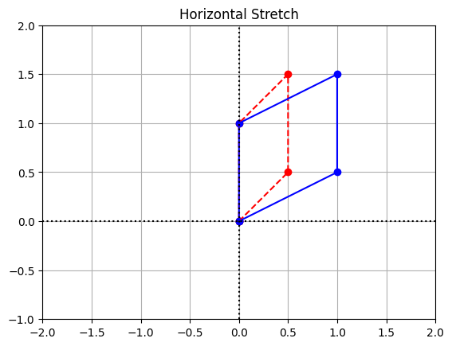
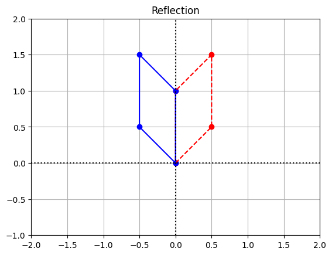
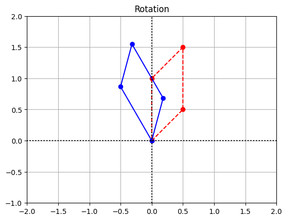
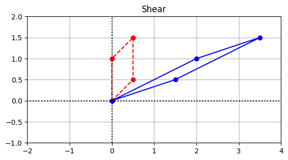
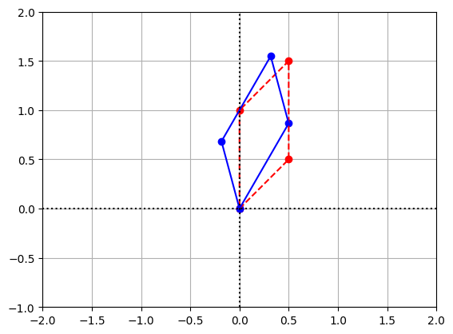

from math import pi, sin, cos
import matplotlib.pyplot as plt
import numpy as np
coords = np.array([[0,0],[0.5,0.5],[0.5,1.5],[0,1],[0,0]])
coords = coords.transpose()
coords
x = coords[0,:]
y = coords[1,:]
A = np.array([[2,0],[0,1]])
A_coords = A@coords변환(평면)
이전 섹션에서 설명한 것처럼, 모든 선형 변환 \(T:\mathbb{R}^2 \to \mathbb{R}^2\)로의 변환은 \(2 \times 2\) 행렬과 좌표 벡터의 곱셈으로 나타낼 수 있습니다. 현재 좌표는 이전과 마찬가지로 표준 기준 \(\{E_1,E_2\}\)에 대한 것입니다. 그러면 행렬의 열은 기저 벡터의 이미지가 됩니다.
\[ \begin{matrix} A = \left[ \begin{array}{c|c} T(E_1) & T(E_2) \end{array} \right] \end{matrix} \]
예제 1: Horizontal Stretch
첫 번째 예로 다음 이미지로 정의된 변환을 살펴보겠습니다.
\[ \begin{matrix} T\left(\left[ \begin{array}{r} 1 \\ 0 \end{array}\right]\right)= \left[ \begin{array}{r} 2 \\ 0 \end{array}\right] \hspace{1in} T\left(\left[ \begin{array}{r} 0 \\ 1 \end{array}\right]\right)= \left[ \begin{array}{r} 0 \\ 1 \end{array}\right] \end{matrix} \]
그러면 변환에 해당하는 행렬은 다음과 같습니다.
\[ \begin{matrix} A = \left[ \begin{array}{cc} 2 & 0 \\ 0 & 1 \end{array}\right] \end{matrix} \]
성분 \(c_1\)과 \(c_2\)를 갖는 일반 벡터의 이미지는 기저 벡터의 이미지의 선형 조합으로 주어집니다.
\[ \begin{matrix} T\left(\left[ \begin{array}{r} c_1 \\ c_2 \end{array}\right]\right) = T\left(c_1\left[ \begin{array}{r} 1 \\ 0 \end{array}\right] + c_2 \left[ \begin{array}{r} 0 \\ 1 \end{array}\right]\right) = c_1T\left(\left[ \begin{array}{r} 1 \\ 0 \end{array}\right]\right) + c_2 T\left(\left[ \begin{array}{r} 0 \\ 1 \end{array}\right]\right) = c_1\left[ \begin{array}{r} 2 \\ 0 \end{array}\right] + c_2\left[ \begin{array}{r} 0 \\ 1 \end{array}\right] = \left[ \begin{array}{cc} 2 & 0 \\ 0 & 1 \end{array}\right] \left[\begin{array}{c} c_1 \\ c_2 \end{array}\right] \end{matrix} \]
변환을 시각적으로 이해하기 위해 여러 입력 벡터와 그에 해당하는 이미지를 표시하는 플롯을 생성합니다. 각 벡터에 동일한 행렬을 곱할 것이므로 입력 벡터와 일치하는 열로 행렬을 구성하여 계산을 정리할 수 있습니다. 이 행렬은 아래 코드에서 \(\texttt{coords}\)라는 레이블이 붙은 배열입니다. 배열 슬라이싱을 사용하여 첫 번째 행 \(\texttt{x}\)에 레이블을 지정하고, 두 번째 행 \(\texttt{y}\)에는 플로팅을 위해 레이블을 지정합니다.
배열 \(\texttt{A\_coords}\)의 열은 \(\texttt{coords}\)의 열을 구성하는 벡터의 이미지입니다. 좌표를 플롯하고 변환의 효과를 살펴봅시다. 다시 말하지만, 슬라이싱을 통해 첫 번째와 두 번째 행에 접근해야 합니다. 빨간색 점은 원래 좌표를 나타내고 새 좌표는 파란색으로 표시됩니다.
x_LT1 = A_coords[0,:]
y_LT1 = A_coords[1,:]
# Create the figure and axes objects
fig, ax = plt.subplots()
# Plot the points. x and y are original vectors, x_LT1 and y_LT1 are images
ax.plot(x,y,'ro')
ax.plot(x_LT1,y_LT1,'bo')
# Connect the points by lines
ax.plot(x,y,'r',ls="--")
ax.plot(x_LT1,y_LT1,'b')
# Edit some settings
ax.axvline(x=0,color="k",ls=":")
ax.axhline(y=0,color="k",ls=":")
ax.grid(True)
ax.axis([-2,2,-1,2])
ax.set_aspect('equal')
ax.set_title("Horizontal Stretch");
변환의 결과로 다각형이 수평 방향으로 늘어난 것을 관찰할 수 있습니다.
예제 2: Reflection
이제 \(\texttt{coords}\) 행렬에 벡터 집합이 저장되었으므로 행렬 \(B\)로 정의되는 또 다른 변환을 살펴봅시다.
\[ \begin{matrix} B = \left[ \begin{array}{cc} -1 & 0 \\ 0 & 1 \end{array}\right] \end{matrix} \]
새로운 배열 \(B\)를 만들되, 이전 예제의 플로팅 코드를 재사용합니다.
B = np.array([[-1,0],[0,1]])
B_coords = B@coords
x_LT2 = B_coords[0,:]
y_LT2 = B_coords[1,:]
# Create the figure and axes objects
fig, ax = plt.subplots()
# Plot the points. x and y are original vectors, x_LT1 and y_LT1 are images
ax.plot(x,y,'ro')
ax.plot(x_LT2,y_LT2,'bo')
# Connect the points by lines
ax.plot(x,y,'r',ls="--")
ax.plot(x_LT2,y_LT2,'b')
# Edit some settings
ax.axvline(x=0,color="k",ls=":")
ax.axhline(y=0,color="k",ls=":")
ax.grid(True)
ax.axis([-2,2,-1,2])
ax.set_aspect('equal')
ax.set_title("Reflection");
이 변환이 Y축으로 대칭되는 것을 볼 수 있습니다.
예제 3: Rotation
평면에서 벡터를 회전하려면 각도 \(\theta\)를 선택하고 시계 반대 방향으로의 회전을 나타내는 행렬을 각도 \(\theta\)만큼 적습니다. 이 경우 기본 삼각법을 사용하여 열을 계산할 수 있습니다.
\[ \begin{matrix} R = \left[ \begin{array}{cc} \cos\theta & -\sin\theta \\ \sin\theta & \cos\theta \end{array}\right] \end{matrix} \]
theta = pi/6
R = np.array([[cos(theta),-sin(theta)],[sin(theta),cos(theta)]])
R_coords = R@coords
x_LT3 = R_coords[0,:]
y_LT3 = R_coords[1,:]
# Create the figure and axes objects
fig, ax = plt.subplots()
# Plot the points. x and y are original vectors, x_LT1 and y_LT1 are images
ax.plot(x,y,'ro')
ax.plot(x_LT3,y_LT3,'bo')
# Connect the points by lines
ax.plot(x,y,'r',ls="--")
ax.plot(x_LT3,y_LT3,'b')
# Edit some settings
ax.axvline(x=0,color="k",ls=":")
ax.axhline(y=0,color="k",ls=":")
ax.grid(True)
ax.axis([-2,2,-1,2])
ax.set_aspect('equal')
ax.set_title("Rotation");
예제 4: Shear
역학 연구에서 전단력은 한 힘이 신체의 일부에 작용하는 동시에 다른 힘이 신체의 다른 부분에 작용하지만 반대 방향으로 작용할 때 발생합니다. 이를 시각화하기 위해 카드 한 벌이 테이블 위에 놓여 있고, 그 위에 손을 얹은 상태에서 손을 테이블과 평행하게 미끄러뜨린다고 상상해 보세요.
전단 변환은 방향 이동과 평행하고 원점을 통과하는 선으로부터의 원래(부호 있는) 거리에 비례하는 양만큼 주어진 방향의 점을 이동시키는 변환입니다. 예를 들어, 벡터에 수평 전단을 적용하면 벡터의 \(x\) 좌표에 \(y\) 좌표의 값으로 스케일링된 값을 더합니다(또는 \(y\) 좌표가 음수인 경우 빼기). 수직 전단은 아래 첫 번째 행렬과 같은 형태의 행렬로 표현되며, 수평 전단은 두 번째 행렬로 표현되는데, 여기서 \(k \in \mathbb{R}\)를 전단 계수라고 합니다.
\[ \begin{matrix} \left[ \begin{array}{r} 1 & 0 \\ k & 1 \end{array}\right] \hspace{1in} \left[ \begin{array}{r} 1 & k \\ 0 & 1 \end{array}\right] \end{matrix} \]
S = np.array([[1,2],[0,1]])
S_coords = S@coords
x_LT4 = S_coords[0,:]
y_LT4 = S_coords[1,:]
# Create the figure and axes objects
fig, ax = plt.subplots()
# Plot the points. x and y are original vectors, x_LT1 and y_LT1 are images
ax.plot(x,y,'ro')
ax.plot(x_LT4,y_LT4,'bo')
# Connect the points by lines
ax.plot(x,y,'r',ls="--")
ax.plot(x_LT4,y_LT4,'b')
# Edit some settings
ax.axvline(x=0,color="k",ls=":")
ax.axhline(y=0,color="k",ls=":")
ax.grid(True)
ax.axis([-2,4,-1,2])
ax.set_aspect('equal')
ax.set_title("Shear");
예제 5: Composition of transformations
선형 변환을 행렬로 표현할 때의 강력한 측면 중 하나는 행렬 곱셈으로 구성을 형성할 수 있다는 것입니다. 예를 들어, 예제 3의 회전과 예제 2의 반사가 뒤따르는 \(B \circ R\)의 구성을 나타내는 행렬을 찾으려면 개별 변환을 나타내는 행렬을 곱하기만 하면 됩니다.
\[ \begin{matrix} [B][R] = \left[ \begin{array}{cc} -1 & 0 \\ 0 & 1 \end{array}\right] \left[ \begin{array}{cc} \cos\theta & -\sin\theta \\ \sin\theta & \cos\theta \end{array}\right] =\left[ \begin{array}{cc} -\cos\theta & \sin\theta \\ \sin\theta & \cos\theta \end{array}\right] \end{matrix} \]
C = np.array([[-cos(theta),sin(theta)],[sin(theta),cos(theta)]])
C_coords = C@coords
x_LT5 = C_coords[0,:]
y_LT5 = C_coords[1,:]
# Create the figure and axes objects
fig, ax = plt.subplots()
# Plot the points. x and y are original vectors, x_LT1 and y_LT1 are images
ax.plot(x,y,'ro')
ax.plot(x_LT5,y_LT5,'bo')
# Connect the points by lines
ax.plot(x,y,'r',ls="--")
ax.plot(x_LT5,y_LT5,'b')
# Edit some settings
ax.axvline(x=0,color="k",ls=":")
ax.axhline(y=0,color="k",ls=":")
ax.grid(True)
ax.axis([-2,2,-1,2])
ax.set_aspect('equal')